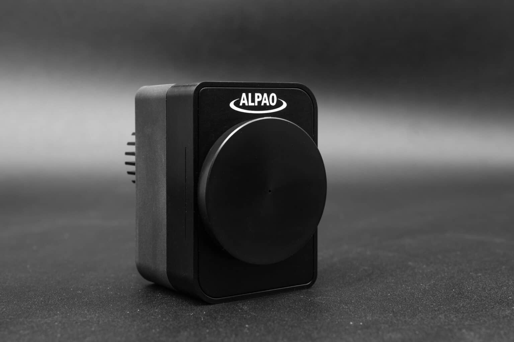

セレクトニュース(3選)
1.【買収】 独HOERBIGERグループが超精密ナノポジショニング最大手「PI」を買収
世界的産業グループのHOERBIGERは、ピエゾステージ・ナノポジショニングのグローバル最大手である独Physik Instrumente（PI）の買収手続きを完了しました。
なぜ重要か：
- 精密制御のグローバル供給網を一元化： 半導体露光・検査や超解像顕微鏡に不可欠な「サブナノメートル制御」の最大手が巨大グループ傘下に入り、投資・量産体制が強化されます。
- 次世代装置の競争環境が変化： 光学制御と精密位置決め技術の融合が進み、先端半導体製造・バイオ機器ベンダーへの供給体制がさらに盤石化します。
2.【市場】 世界の適応光学（AO）市場、2034年までに94.4億ドル規模へ急成長
市場調査レポートによると、適応光学（AO）市場は2025年の8.1億ドルから年平均成長率（CAGR）23%で推移し、2034年には94.4億ドル規模へ達する見通しです。
なぜ重要か：
- 適用分野の劇的拡大： 宇宙通信（空間光通信）の大気揺らぎ補正、超JISを満たす先端半導体、高出力レーザー加工での採用が成長を強力に牽引しています。
- 汎用技術への昇華： 天文学や軍事用といった特殊用途から、産業・ライフサイエンスなど産業の「標準」基盤へと市場が移行しています。
3.【画像計算】 NICT、高価な変形鏡なしで光学歪みを補正する「計算適応光学」を開発
情報通信研究機構（NICT）は、ハードウェアでの波面補正（変形鏡）を行わず、撮影後のデジタル計算処理のみで生体深部観察などの光の歪みを打消す「計算適応光学」を開発しました。
なぜ重要か：
- 超精密・深部観察の「民主化」を促進： 高価な変形鏡システムを導入せず、既存の顕微鏡やイメージング装置の解像度を後から劇的に引き上げられます。
- ハードからソフト（計算）へのパラダイムシフト： 装置の低コスト・小型化を実現し、医療診断や産業検査の「見えなかった領域」の可視化を急速に身近にします。
ピックアップ製品・ソリューション
Bertin Alpao「可変型ミラー(Deformable Mirrors / eDM)」
電磁アクチュエータ駆動による超高速・大ストローク波面補正

なぜ重要か：
- 高次収差や熱歪みをリアルタイムに消滅： 大気揺らぎ、光学系のガラス歪み、高出力レーザーによる熱歪みをアクティブ（動的）に打消し、超解像イメージングの限界や宇宙光通信のデータ損失を劇的に改善します。
現場課題への解決アプローチ：
- 最速0.5ms以下の圧倒的なレスポンス： 電磁駆動方式により、秒単位で激しく動く大気揺らぎや光学系内の動的なズレを完全に抑え込み、解像度を限界まで高めます。
- 最大80µm以上の「巨大ストローク」対応： 補正しづらかった大きな歪みや波面のズレも1枚でクリアに。歪みの大きい極限環境（高エネルギーレーザーや生体深部など）でも真価を発揮。
- 5.6mmから190mmまで多彩なラインナップ： 小型機器への組み込み（sDM / eDM）から大型プロジェクト（DMX）まで、半導体露光機から天文観測まで幅広いスケールに対応。
| メーカー名 |
Bertin Alpao（ベルティン・アルパオ） |
| シリーズ展開 |
埋め込み型(eDM)、スマート(sDM)、小型(DM)、大型・大口径(DMX) |
| アクチュエータ数 |
37個 〜 最大13,107個（用途に応じた緻密な分割変形） |
| 応答速度 / 整準時間 |
最短0.5ms以下（電磁駆動ならではの高速動作） |
| 有効瞳径（口径） |
5.6mm 〜 190mm（大型DMXは170mm以上対応） |
| 変形ストローク |
Tip/Tilt：最大80µm PV以上 |
| 光学補正精度 |
アクティブベストフラット最良7nm RMS / 低ヒステリシス（2〜3%） |
| 標準コーティング |
Protected Silver（保護銀） / オプション：金、アルミ、誘電体多層膜 |
| 制御インターフェース |
専用SDK提供（C++、Python、Matlab、LabVIEW等） / USB2.0、Gigabit Ethernet |